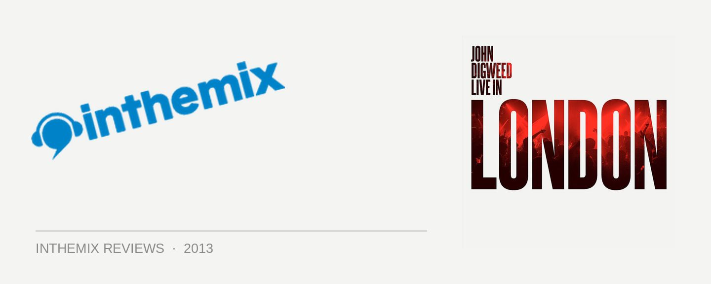

John Digweed – Live In London
The very notion of UK auteur John Digweed playing a eight-hour set in London last October for Bedrock’s ‘14th Anniversary’ party was tantalising enough to draw in fans from all over the world. As is often the case though, the reality of the party differed starkly from expectations. While the excellence of what was delivered behind the decks never faltered, the rough-and-tumble crowd of London louts gathered in the club didn’t exactly do the music justice.
Ironically though, this might make Live In London an even more essential release. The whopping four-disc compilation showcases nearly five hours, and more than 50 of the tracks heard across the duration of that night; and arguably, soaking up the sheer excellence of this extended set on your home stereo might actually trump the reality of endlessly jostling for a space if you were actually there in person.
While the recent unmixed Bedrock 14 compilation left some fans a little cold, Digweed infinitely redeems himself here, with Live In London indulgently leading you through the entire journey of an immaculately-crafted extended set. He graced the decks shortly after midnight on that chilly winter evening, warming up his set with a dose of deep melodic techno courtesy of Eagles & Butterflies’ Kolleckt (also the opener for the aforementioned Bedrock 14 release). From here on, the set evolves into some more inviting strains of house funk, with Digweed even slipping a few vocals into the frame, most memorably via a fresh remix of Dusky’s soulful It’s Not Enough.
He loosens the reins a little via the shimmering progressive of Desen Jumi’s Phonogenic; however, it’s a prelude for a dive back into some deeper house as we head into the second disc, indicating Digweed isn’t quite ready to smash it out yet. He finally offers an energy release via the infectious vocals of Max Chapman’s remix of Serious, signaling a rise of the intensity levels.
Things really toughen up with Subb-an’s punchy remix of Tiga’s classic Pleasure From The Bass, and after several back-to-back cuts from Pig & Dan, and a particularly heavy tech-house slammer from Quivver, we’re carried into the unbridled mayhem that rules the scorched earth of the final disc, where things really get dark and dirty. Slamming techno energy all the way.
The lasting impression left by Live In London is how much of a master craftsman John Digweed really is. The programming of the evening’s entertainment simply can’t be faulted; with a connoisseur’s ear for what makes for a good record, his versatility sees him constantly shifting the tempo, with every last track is used as a tool to paint a bigger picture.
They’ve also nailed the live recording perfectly; a hush will descend as he paces the crowd’s energy with some of his the more restrained records, before a dash of melody piques their interest again. Eventually, you can be sure he’ll red-line the intensity levels with a devastating drop or a fiery build-up, suitably greeted with a roar of appreciation from the audience.
Offering the indulgent gift of nearly five hours of immaculately polished house and techno perfection, Live in London is the gift that keeps on giving. While it was a late entry into the 2012 canon of compilations, this doesn’t stop it from being among the best.
John Digweed – Live in London is out now on Bedrock Records.
CD1
Eagles & Butterflies – Kolleckt
Sebo & Madmotormiquel, Nayan Soukie – Slow
Kollektiv Turmstrasse – Kontakt – Sieg über die Sonne Remix
Baby Prince ft. Lonely C – Nobody – Miguel Campbell Club Mix
Luca Bacchetti – A Night In Nassau
Phonogenic – Desen Jumi
Maher Daniel & Nikko Gibler – I’ll Wait For You
Dusky Feat. Janai – It’s Not Enough – jozif Voxatron Remix
jozif – Twilight – Edu Imbernon 96’ Mix
Wiretappeur – Iridescent
Ben Pearce – What I Might Do – Bonar Bradberry Remix
Todd Bodine – Melancholiebe
Simian Mobile Disco – Everyday
CD2
Sebo & Madmotormiquel, Nayan Soukie – Everything Will Change
Stelios Vassiloudis – Coma
Pezzner – Need More
Blamma! Blamma! – Obsidian/Oblivion Feat. FEMME – Deleted Edit
SIS – Miles From Me
Pig & Dan and Olivier Berger – Crazy
Alex Arnout – Serious – Max Chapman Remix
Justin Martin – Butterflies – Catz ‘N Dogz Remix
Jemmy – Quarry Bank – Stelios Vassiloudis Remix
Mohn – Eberplatz 2020 – Jörg Burger Mix
Mohn – Eberplatz 2020 – Wolfgang Voigt Hard Trance AtlanticXS Mix
Miguel Bastida & Florian Kaltstrøm – Behind The Mirror
CD3
Stelios Vassiloudis – What’s That?
Simian Mobile Disco – Unfixed
Igor Bara & Vernon Vicente – Don’t Feel No Way
Julian Jeweil – Zoulou
Nico Lahs – My Side – Daniel Dexter Remix
Stephan Bazbaz – Hurt Me – Mihai Popovicius & Morning Dub
Pig & Dan – Insomnia
Tiga – Pleasure From The Bass (Subb-an Remix)
Phonogenic – Tired Being
DJ Romain ft. Hype Hunnets – Luv In The Club – Instrumental
Pig & Dan – Let The Show Begin
Pig & Dan – Natives (Dosem Remix)
Smash TV – Matthew Pervert – Coyu Remix
Quivver – Fakes and Bullshit
CD4
Kernel Key – Out Of Body Experience
Harvey McKay & Saytek – Nothing
Antix – Like Ships In The Night – Jamie Stevens Remix
Max Cooper – Gravity Well – Microtrauma
Doomwork – Dreamland – Supernova Remix
Guy J & Sahar Z – 7.11
Kyodai – Never Know
Robert Babicz – Eastside
Butch – 303 – Paul Ritch Acid Dub Mix
Heiko Laux & Diego Hostettler – Jack Up
Deetron feat. Hercules & Love Affair – Crave – Deetron cRAVE Dub
Gabriel Ananda – Hey Blop – Marcel Janovsky Remix
Guy J – Mish Mash
Hollen – Monitores
Technasia – Bastille Days
Pete Bones – Give That Man A Bell